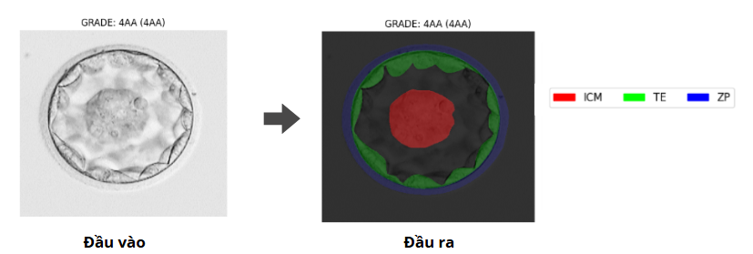

1. Giới thiệu
Phân đoạn phôi nang là bước quan trọng trong đánh giá chất lượng phôi IVF. Tuy nhiên, ảnh phôi nang thường bị nhiễu và ranh giới các vùng khó xác định. Việc tự động hóa phân đoạn giúp tăng tính chính xác, giảm phụ thuộc chuyên gia.
2. Phương pháp và mô hình
So sánh các mô hình học sâu như U-Net, DeepLabv3 và MASS-Net. Sử dụng kỹ thuật tiền xử lý nâng cao và chiến lược huấn luyện như Focal Tversky Loss, AdamW Optimizer và CosineAnnealing Scheduler.
*Định nghĩa vấn đề
- Đầu vào: Ảnh vi mô phôi nang
- Đầu ra: Mặt nạ phân đoạn của các vùng: ICM, TE, ZP

*Datasets
- Nguồn: 235 ảnh phôi nang có gán nhãn pixel (ZP, TE, ICM, BL)
- Chia tập: 85% train (200 ảnh), 15% test (35 ảnh)
- Tăng cường dữ liệu: lật, xoay, dịch chuyển → tạo 3200 ảnh
- Ứng dụng: huấn luyện mô hình phân đoạn trong IVF
- Hạn chế: ít mẫu, thiếu đa dạng, chỉ từ Canada → giảm tổng quát hóa
3. Kết quả thực nghiệm
- Res-Unet++ + ResNeXt50 là mô hình phân đoạn phôi nang hiệu quả nhất
→ Đạt Pixel Accuracy: 91.96%, Mean IoU: 83.93%, F1-Score: 90.01%
- Mô hình phân đoạn rõ ràng 3 vùng sinh học chính: ICM, TE, ZP
→ Tái tạo được ranh giới phức tạp, gần sát với nhãn gốc
- Hiệu quả vượt trội cả về định lượng và trực quan
→ Góp phần nâng cao độ chính xác chọn phôi trong IVF
4. Hướng phát triển
Tích hợp mô hình Transformer, học bán giám sát, tăng cường dữ liệu từ nhiều quốc gia, ứng dụng XAI để tăng độ tin cậy trong thực tế lâm sàng.
5. Poster báo cáo